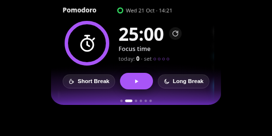
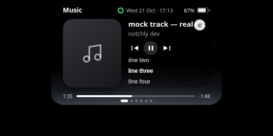
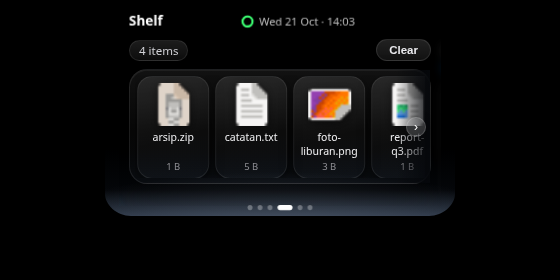
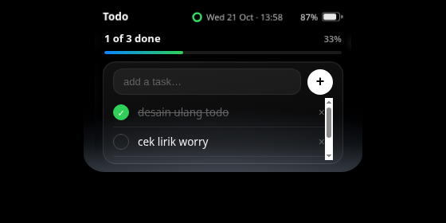
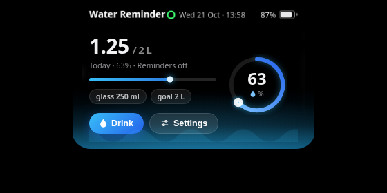

a little notch.
on your windows.
notchly tucks your music, lyrics, a focus timer and the small stuff into a notch at the top edge of your screen. Brush past it and it opens. Ignore it and it stays out of the way.
Download for Windows
v0.15.13 is in testing — the public link lands here with the final build.
The app itself, not a render.
Straight captures of the current build on an ordinary day.





What lives in the notch
- Music
- Whatever Windows is playing, with transport controls and a progress bar you can scrub to the exact second.
- Lyrics
- Synced lines that follow the song, clicked to seek. When a song has no synced lyrics, the artwork takes the stage in a big hero layout instead — the toggle on the music page flips between the two whenever you like.
- Focus
- A pomodoro with Focus, Short Break and Long Break. The countdown also lives in the pill, so it stays visible with the panel shut.
- Water
- A daily goal taken a glass at a time, with a reminder only if you ask for one.
- Shelf
- A parking spot for files. Drop them on the notch, drag them back out into any app, folders and all.
- Todo
- A short list with a progress line. Double-click a line to rewrite it.
- Calendar
- The month at a glance, today in red. No account, nothing to sync.
How it behaves
- Opens on a brush
- Move the cursor to the notch and the panel springs open. Move away and it folds shut. No clicking just to peek.
- Knows when to shrink
- Put a video or a game fullscreen and the notch becomes a thin black sliver. Under a maximised window it opens only when you click the black strip itself — never when you aim at the tab next to it.
- One copy only
- Launch it while it is already running and the running notch comes forward. Quit from the tray and it actually quits.
- Keeps to itself
- One small overlay on your own machine. No sign-in, no telemetry, and your lists and counts never leave the app.
Give the top of
your screen a job.
Download for Windows
Free · Windows 10 & 11 · portable, nothing to install · about 85 MB